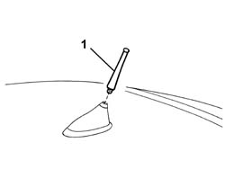
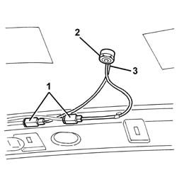
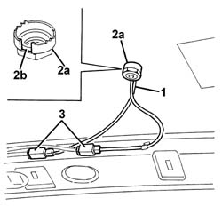

5570T59 multipurpose aerial - r r with roof panel trim removed
- Path
- Procedures > 55 ELECTRICAL EQUIPMENT > 5570 ACCESSORIES > 5570T car radio and car telephone > 5570T59 multipurpose aerial - r r with roof panel trim removed
- Kind
- repair procedure (removal / refitting; the operation number is the code)
- Applies to
- all engines; all production periods
- Interactive page
- https://sloeber94.github.io/elrnDB-a156/en/#/3238511
Applies to: all engines; production: da 03/02 a 09/03, da 10/03
 Removing
Removing
 Refitting
Refitting1. Unscrew the aerial.

Applies to: all engines; production: da 03/02 a 09/03, da 10/03
1. Disconnect the aerial cable connections.
2. Remove the aerial base, with the cables, working from the outside.

Applies to: all engines; production: da 03/02 a 09/03, da 10/03
Refitting
RemovingCheck that the aerial is not damaged.
1. Place the aerial base and cables in position, working from the outside.
2. Tighten the nut (2a) inserting the aerial leads in the housing (2b) in the nut.
3. Connect the aerial cable connections.

Applies to: all engines; production: da 03/02 a 09/03, da 10/03
Screw on the aerial.